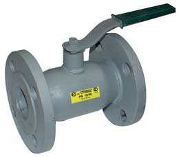

- Продукция
- Запорная арматура
- Стальные шаровые краны
Стальные цельносварные шаровые краны
Шаровые краны уже давно хорошо зарекомендовали себя в качестве запорных устройств для управления потоками различных жидкостей и газов. Шаровые краны широко применяются как в новом строительстве, так и для замены вышедшего из строя старого оборудования - задвижек, вентилей и кранов. Это обусловлено отличными эксплуатационными свойствами шаровых кранов, большим ресурсом, надежностью, низкой массой, низкими затратами на обслуживание, высокой скоростью открытия.
Поставляемые нами стальные шаровые краны с цельносварным корпусом обладают всеми вышеперечисленными достоинствами и изготовлены с высоким качеством.
Технические характеристики шаровых кранов:
- Материал корпуса: Сталь 20, 09Г2С, 12Х18Н10Т
- Исполнение по типу присоединения: фланцевое, приварное, муфтовое, комбинированное
- По типу привода: ручной, ручной с редуктором, с электроприводом, с пневмоприводом
- Рабочее давление, МПа: 1,6; 2,5; 4,0
- Температура рабочей среды: От -60 до +180oC
- Класс герметичности: класс А по ГОСТ 9544-93
- Срок службы: не менее 10 лет
| Наименование | DN | PN | L | D | D1 | n | d | Масса,кг |
|---|---|---|---|---|---|---|---|---|
| Кран шаровой стальной | 15 | 16 | 110 | 95 | 65 | 4 | 14 | 1,8 |
| Кран шаровой стальной | 20 | 16 | 120 | 105 | 75 | 4 | 14 | 2,0 |
| Кран шаровой стальной | 25 | 16 | 130 | 115 | 85 | 4 | 14 | 3,0 |
| Кран шаровой стальной | 32 | 16 | 140 | 135 | 100 | 4 | 18 | 4,6 |
| Кран шаровой стальной | 40 | 16 | 165 | 145 | 110 | 4 | 18 | 6,0 |
| Кран шаровой стальной | 50 | 16 | 180 | 160 | 125 | 4 | 18 | 8,4 |
| Кран шаровой стальной | 65/50 | 16 | 200 | 180 | 145 | 4 | 18 | 9,0 |
| Кран шаровой стальной | 80 | 16 | 210 | 195 | 160 | 4 | 18 | 12,8 |
| Кран шаровой стальной | 100/80 | 16 | 230 | 215 | 180 | 8 | 18 | 25,0 |
| Кран шаровой стальной | 125 | 16 | 400 | 245 | 210 | 8 | 18 | 35,0 |
| Кран шаровой стальной | 150/125 | 16 | 350 | 280 | 240 | 8 | 22 | 45,3 |
| Кран шаровой стальной | 200 | 16 | 460 | 335 | 295 | 12 | 22 | 76,0 |
| Кран шаровой стальной | 250/200 | 16 | 530 | 405 | 355 | 12 | 26 | 80,0 |
Шаровые краны PN 16 наиболее ходовых исполнений обычно есть в наличии на складе.
Также мы поставляем шаровые краны 11с67п, шаровые краны из ПВХ для воды и агрессивных сред.